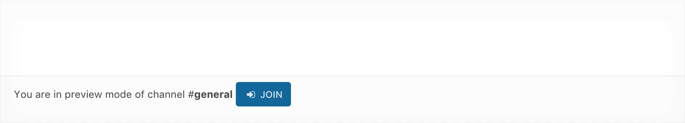
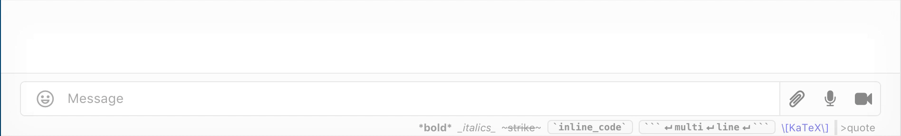
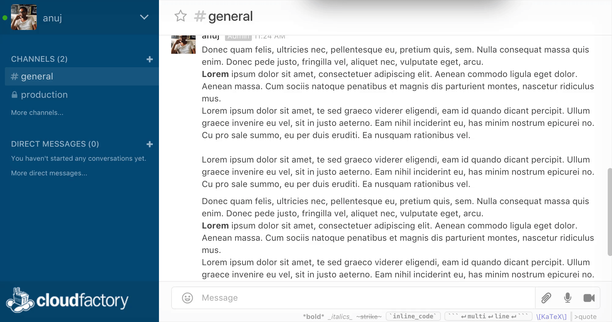

Channels
Conversations in Rocket.Chat are organized into channels. A channel can be public or private. Private channels (known as private groups) are accessible only by members invited to the room. Public channels are accessible to the entire team. Direct messages are private 1-on-1 correspondence sent to a particular recipient.
 Image: Private Groups and Channel |
 Image: Direct Message |
Private groups in Rocket.Chat are conveniently prefixed with a lock icon to indicate private status. Private groups are best to share sensitive, confidential topics to a smaller subset of the team. Private groups can be joined by invitation only. The administrator sets the permissions that determine who can invite others to a private group.
Channel operations
Favorites
To help you organize and prioritize your communications, you can favorite (or star) channels, private groups, and direct messages. To favorite a channel, click on the star icon in the upper left hand corner of the message area (next to the room name) which turns it yellow. Starring helps you to avoid noise and to focus on what’s important to you.

Image: Marking a channel as Favorite
Favorite channels appears under the list of Favorites in the left-hand pane, To remove as favorite, click on the star again.
Joining channels
You can join a public channel by browsing to it and clicking on the Join button. 
Image: Marking a channel as Favorite
Hiding and leaving channels
There are two notions of leaving a channel:
-
To hide a channel is to remain a member of the channel but to remove it from your list of channels on the left-hand pane.
-
To leave a channel is to remove it from your list of channels and to leave the channel (i.e., no longer be a member of the channel).
To leave a channel, enter the command /part or /leave in the message window

Image: Leaving a channel in Rocket.Chat
Alternatively, hover your mouse over the channel in the list of channels on the left-hand side and click on the Leave button. Similarly, clicking on the Hide button hides the channel from view.

Image: Hiding a channel in Rocket.Chat
On the mobile app, pull from the left-hand side to see the list of open channels, hold down on the channel to bring up the buttons Leave, Hide buttons.